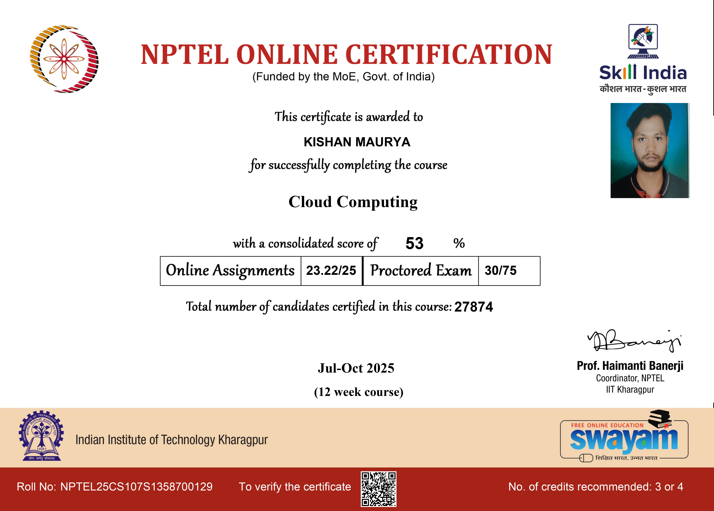
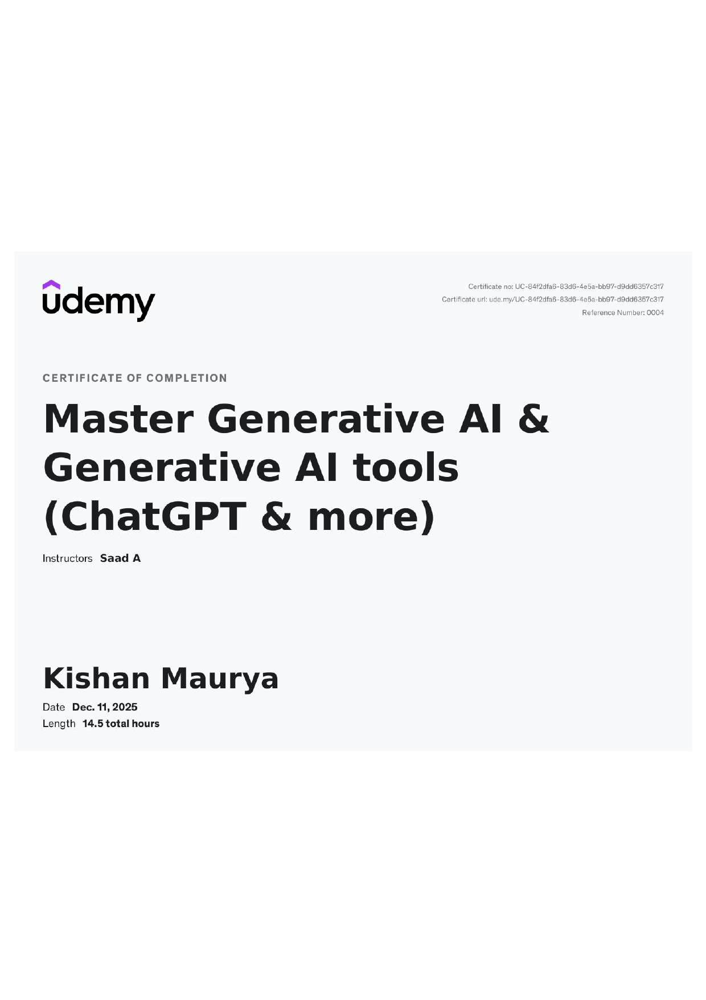
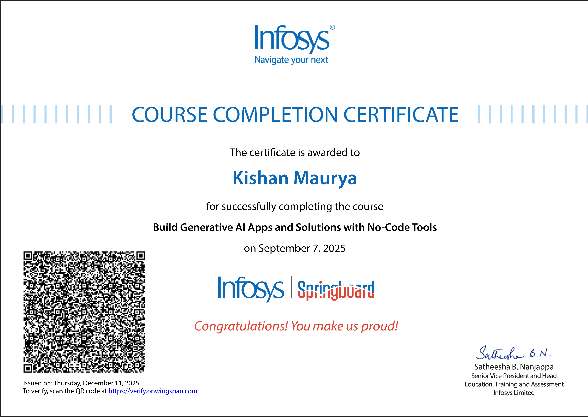
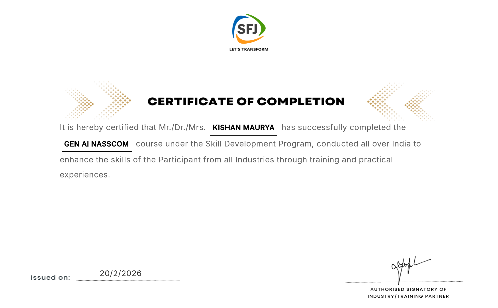

Completed the Cloud Computing certification from NPTEL which focuses on cloud infrastructure, distributed systems and virtualization technologies. The course covered cloud service models such as IaaS, PaaS and SaaS and deployment models like public, private and hybrid cloud. It also explained scalability, storage management and cloud security concepts used in modern large scale cloud platforms.

Completed a professional certification on Generative Artificial Intelligence and modern AI tools. The course introduced prompt engineering, AI powered automation tools and practical applications of generative AI for productivity, content creation and data analysis. It provided strong understanding of how modern AI technologies can be used to build intelligent digital solutions.

Completed the Infosys certification focused on building Generative AI applications using no-code development platforms. The course covered automation tools, AI workflows and integration techniques that allow developers to create AI powered applications without traditional coding. This certification improved my understanding of modern AI development tools.

Completed the Generative AI certification offered by NASSCOM through the Skill for Jobs (SFJ) initiative. The program introduced the fundamentals of Generative Artificial Intelligence, prompt engineering and the use of AI tools for automation, productivity and content generation. The certification also highlighted real world applications of generative AI technologies and their impact on modern digital solutions and software development.